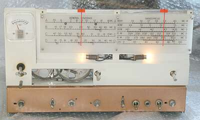
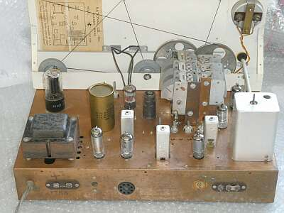
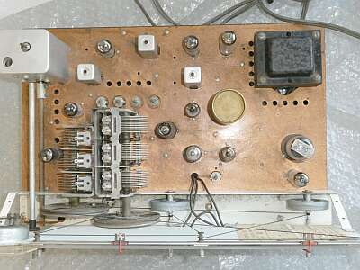
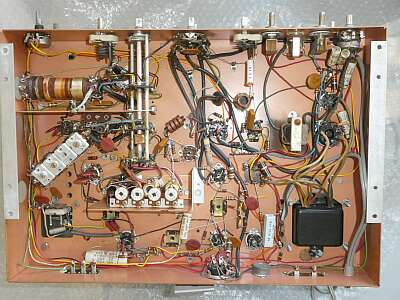
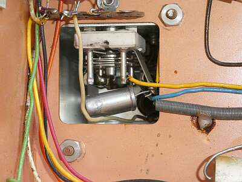
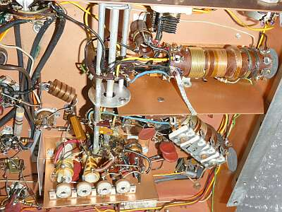
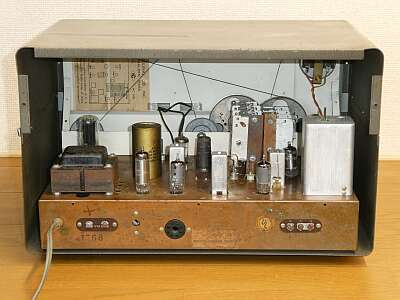

 |
メイン、スプレッド共に、ダイヤル糸をきちんと張って、切れたランプを交換
こんな通電イメージとなります
スプレッド・ダイヤル・ツマミ（右側）を、思いっきりぶつけた過去があるようで、糸をかけるシャフトが曲がって（変形して）いますが、こればかりは仕方ありません（ツマミも痛んでいます） |
 |
リア側からフロントパネル裏を見たもの
糸掛けダイヤルの糸が、複雑に？張られています
全体を見ると、ゆったりとして見えます |
 |
シャーシ上面です
左上のシールドBOXは、クリスタル・フィルタ部
整流管以外は、ＭＴ管です |
 |
シャーシ底面です
銅メッキシャーシ・・・ＤＲＡＫＥは、これを真似たのかな？ |
 |
クリスタル・フィルタ
シールドＢＯＸの中身（裏側）
クリスタル一片とＰＨＡＳＥ用ＶＣが見えます |
 |
ＲＦ部
手前（上）がＡＮＴコイル
その奥（下）がＲＦ（プレート同調）コイル
Ｑの高そうに見えるコイルたちです
その奥（下）が、ＯＳＣコイル
タイト・ボビンが採用されています
この辺りは、とても丈夫に作ってあります |
 |
リアです
本来、リアパネルがあるのですが、今回入手したものには取り付いていませんでした
内部が丸見えです！ |
・感度がとれない
４５５KHｚ初段のＩＦＴの同調ずれというかコアの破損
この処置が大変で、ＩＦＴを一度分解しました
・プロダクト検波が動作しない（ＳＳＢ、ＣＷにモードを切り替えると無音）
６ＢＥ６に＋Ｂがかかっていない・・・真空管ソケット部分の接触（はんだ付け）不良
大きくはこの２点の対応で、あとはお決まりのクリーニング処理とトラッキング調整にて、そこそこの性能が得られるようになりました |
|
国内で、プロダクト検波が採用されるようになったのは１９６３年ごろ、それより５年以上前からＳＳＢを意識して設計された受信機ということになります
最後は、お決まりのスペックチェックです
真空管とＣＲについては、入手したままの状態です（ＣＲはオリジナルのまま）
|
|
AM S/N１０ｄB
１KHz30%変調ON/OFF |
|
CW（ビート） S/N１０ｄB
信号ON/OFF |
| ７MHｚ帯 |
|
１．４μV |
|
０．４μＶ |
| １４ＭＨｚ帯 |
|
５μV |
|
１．４μＶ |
|
|
|
|
|
７ＭＨｚ帯にあっては、ＳＳＢも復調できます
声が震えた感じは残りますが、通信ということでいえば安定に受信できます CWは問題ありません
強い信号は、ＲＦゲインを下げる必要があります・・・この当時は、これが普通、なにせＡＧＣ-ＯＦＦで受信です
ＲＦゲインコントロールＶＲの使い方の説明に、ＣＷ受信時は音量調整に使うと、あります
１４MHｚ帯（Dバンド）以上のＳＳＢ／ＣＷ利用は限定的、AM放送受信／ＳＷＬ向きには全然ＯＫといったところです |